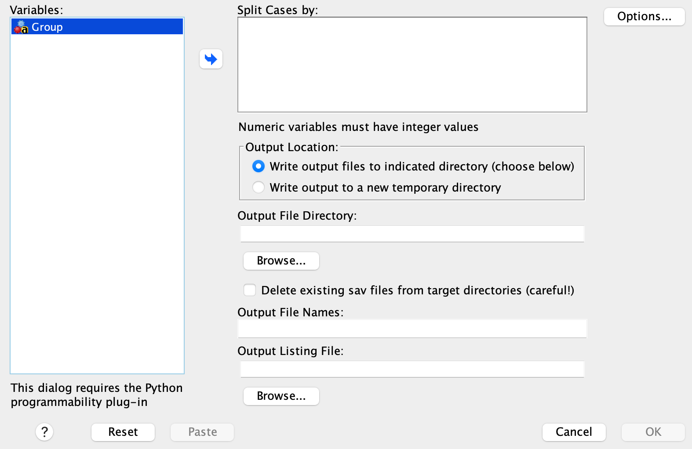

Lab 5: Inference for a Single Mean: One Sample t-test
Overview Scenario
In this lab, we will explore the use of the t-test to compare a sample mean to a known population mean. We will use SPSS to perform the calculations and interpret the results.
Here is the scenario:
A fitness center wants to determine if their new weight loss program is effective. It is believed that the average weight loss for individuals who participate in a weight loss program with financial incentives is 15 pounds over a 4-month period. The fitness center wants to see if their program leads to a different average weight loss than this known population mean.
To investigate this, the center recruited 38 individuals who wanted to lose weight and randomly assigned them to either a incentive group (given financial incentives) or a control group (not given any financial incentives). After 4 months, the researchers recorded the amount of weight lost (before - after) by each individual. Three months after the initial 4 months, they also recorded the weight lost by each individual again to see if the weight loss was maintained. However, financial incentives were only given during the first 4 months.
By the end of this lab, you should be able to:
- State null and alternative hypotheses for a population mean.
- Perform a one-sample t-test in SPSS.
- Interpret the results of a one-sample t-test in the context of a research question.
Part 1 — The Data & Hypotheses
The Data
The data collected is available in the following link:
Download the data and import them into SPSS.
File > Import Data > CSV Data…, browse to the file location, and click OK on the import wizard (accept the default settings).
Make sure the measurement scales are set as follows and that there are 38 rows:
WeightLoss= ScaleGroup= NominalMonth7Loss= Scale
The variable description is as follows:
Group = Whether someone was in the Incentive or Control group.- WeightLoss = The amount of weight lost by each individual
Weightloss = The amount of weight lost by each individual at the 4-month follow-up.
Month7Loss = The amount of weight lost by each individual at the 7-month follow-up
Stating Hypotheses
Null Hypothesis: The average weight loss for individuals in the incentive group is still equal to 15 pounds.
In symbols: \(H_0: \mu = 15\)
Alternative Hypothesis: The average weight loss for individuals in the incentive group is different from 15 pounds.
In symbols: \(H_1: \mu \neq 15\)
Part 2 — Data Filtering
We are only interested in the individuals in the incentive group for this lab. One way to isolate the incentive group is to use the Split into files feature in SPSS. Here are the steps:
Data > Split into Files. The following window will pop up:

Send the Group variable into the Split Cases by box, then click on Browse to specify the file location then click OK.
Next, navigate to the file location in your computer and open the file named Incentive.sav. Notice that this file contains only members of the incentive group and their weight loss variables.
Part 3 — Exploratory Analysis
Before running the t-test, we will perform some exploratory analysis to understand the data better. We can start by exploring the spread of the data using a box plot:
Run the following steps:
Graphs > Chart Builder > Boxplot. Move WeightLoss into the Y-axis box. Click OK.
Based on the box plot, how would you describe the spread and shape of the WeightLoss variable for the incentive group? Are there any suspected outliers?
Generate a histogram to visualize the distribution of the WeightLoss variable. What aspects of the distribution can discern based on the histogram that you cannot discern from the box plot?
Calculate the summary statistics (mean, median, standard deviation, minimum, maximum) for the WeightLoss variable. Comments on the range and standard deviation.
Part 4 — Running the t-test
To run the one-sample t-test, follow these steps:
- Analysis > Compare Means and Proportions > One-Sample T Test.
- Move
WeightLossvariable into the Test Variable(s) box. - Enter
15in the Test Value box. Make sure the “Estimate effect size” checkbox is checked. - Click on Options and check that the confidence interval is set to 95%. Click Continue.
- Click OK.
Output Interpretation
The output will provide you with the t-statistic, degrees of freedom, p-value (one-sided and two-sided), and the confidence interval, among others.
Here is an APA-style interpretation of the results:
Take-Home Lab Exercises
TBD